Subscrr is a subscription-tracking platform that shows individuals and teams what they really spend on recurring services — in one dashboard, in any currency — and warns them before the next charge happens. This guide covers every feature, how the product differs from alternatives, and how the content platform is operated.
Banks show you money after it leaves. Subscrr shows you before — that one-day-early warning is the entire value proposition.
Every subscription in one ledger: price, currency, billing cycle, category, payment method, renewal date. Add manually, paste billing text, or scan a receipt with AI.
Yearly plans are normalised to monthly equivalents, mixed currencies are converted to one display currency, and the true 12-month commitment is always visible.
A background engine generates renewal, trial-end and budget alerts, delivered as in-app notifications and real email — days before money leaves.
Category breakdowns, 12-month spend projections, top-expense ranking and an interactive "subscription leak" calculator quantify the waste you can cancel.
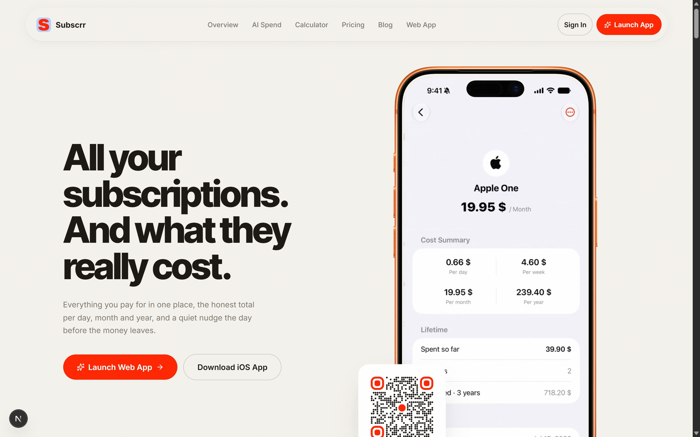
Email + password with industry-standard security (hashed credentials, rate-limited login, brute-force lockout). A password-reset flow sends a real, single-use email link valid for one hour.
Manual entry with brand colours & icons · paste any confirmation email or bank line for parsing · or drop a receipt/invoice image into the AI Scanner.
Monthly spend, annual commitment, daily burn, next charge — recalculated live, in your currency, across USD/EUR/GBP/INR/JPY/CAD/AUD.
Renewal countdowns, trial-ending warnings and budget-threshold alerts arrive in-app and by email — so cancelling is a decision, not a discovery.
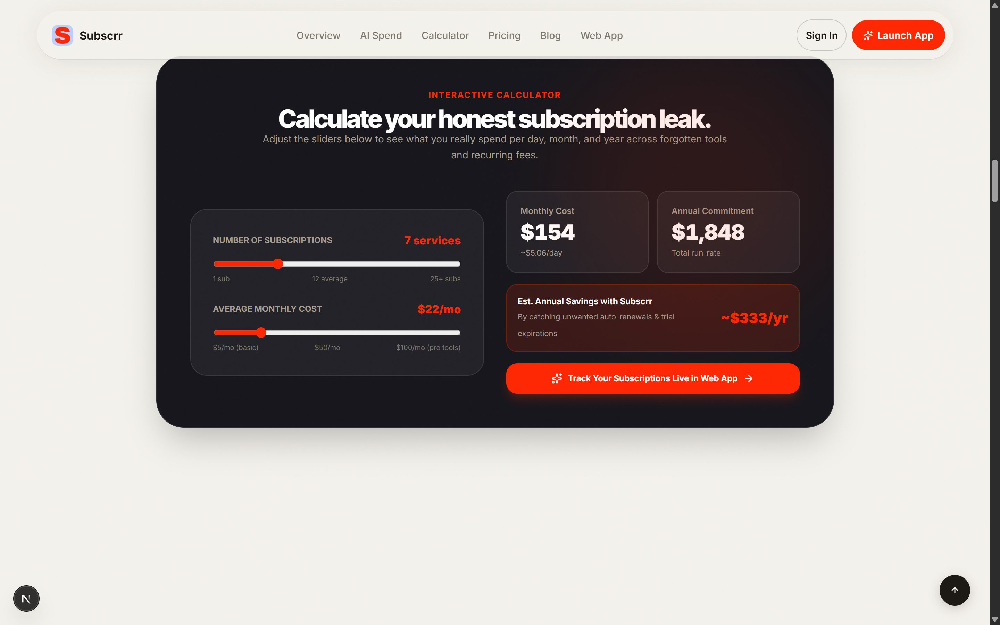
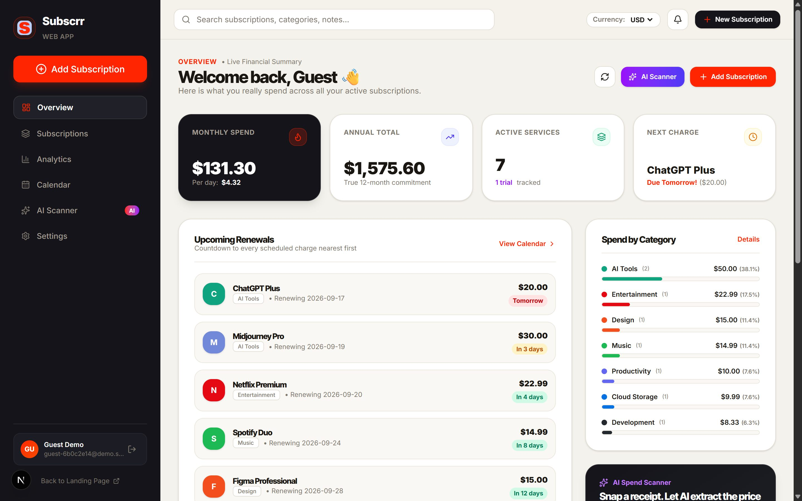
A $100/year GitHub plan shows as its true monthly equivalent next to monthly bills, so the totals are honest.
Track in USD, spend in INR — amounts convert to your display currency using live rates, per-subscription.
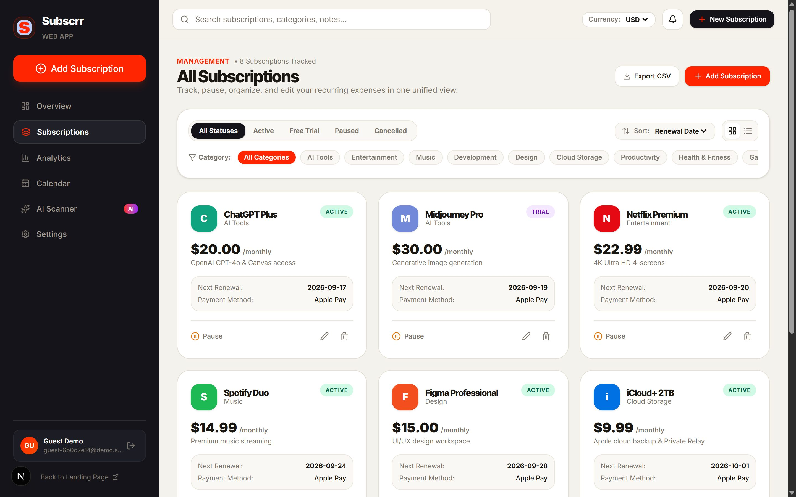
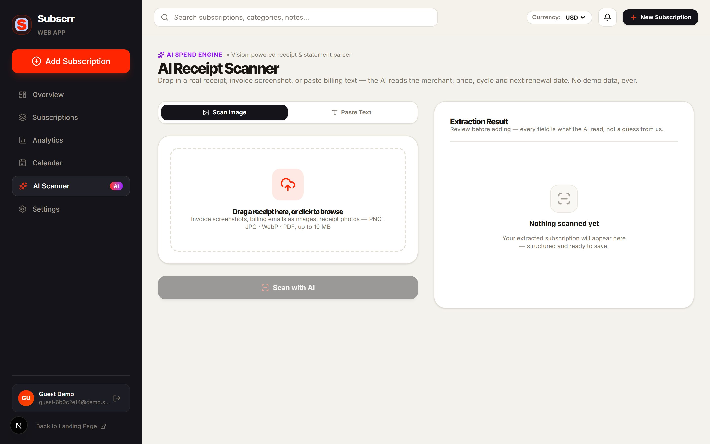
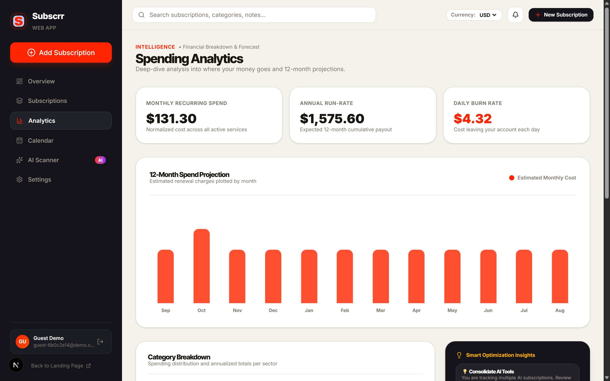
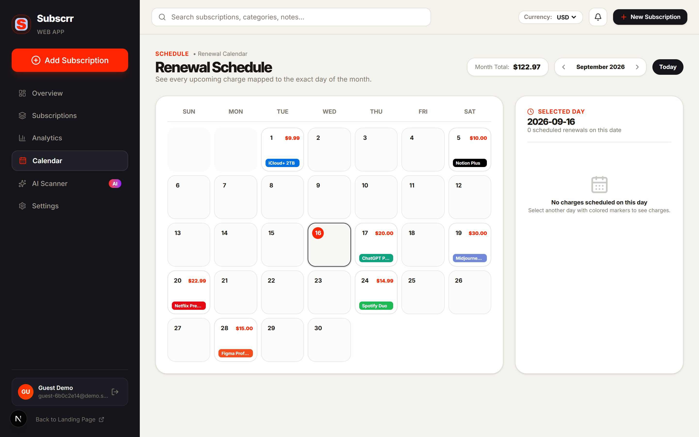
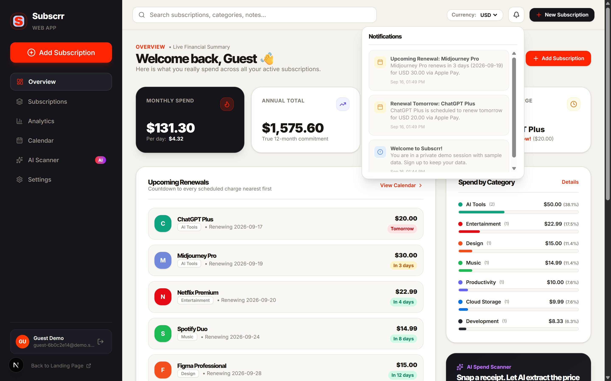
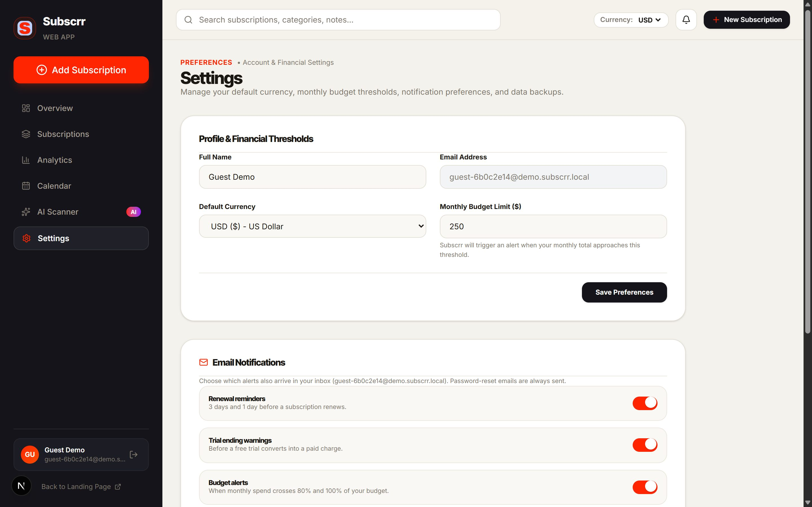
The marketing blog runs on Payload CMS 3, embedded directly inside the Next.js application — a database-backed, admin-editable content system with draft workflow and version history. No code deploys needed to publish an article.
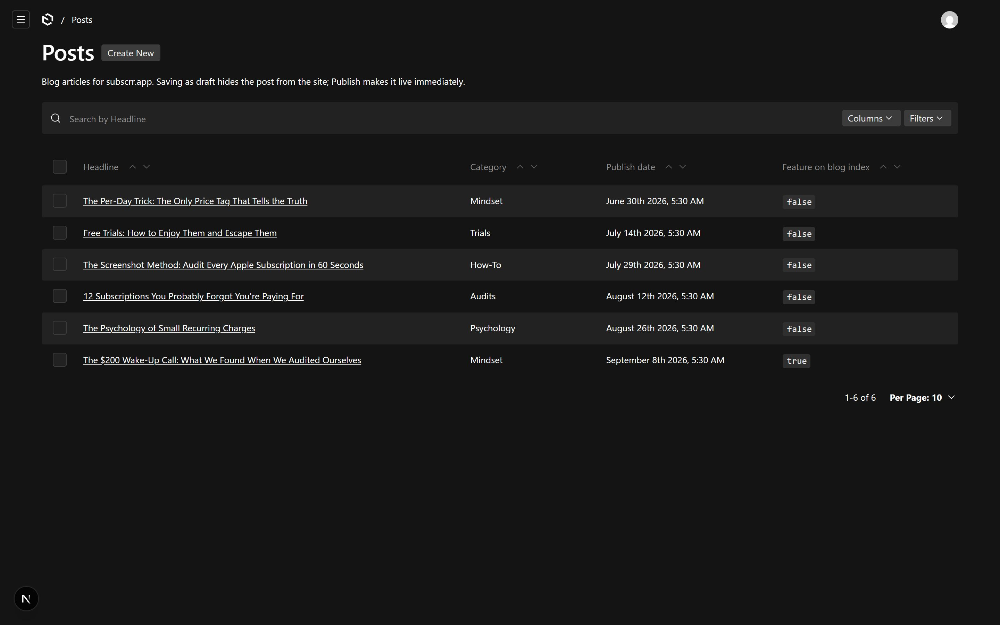
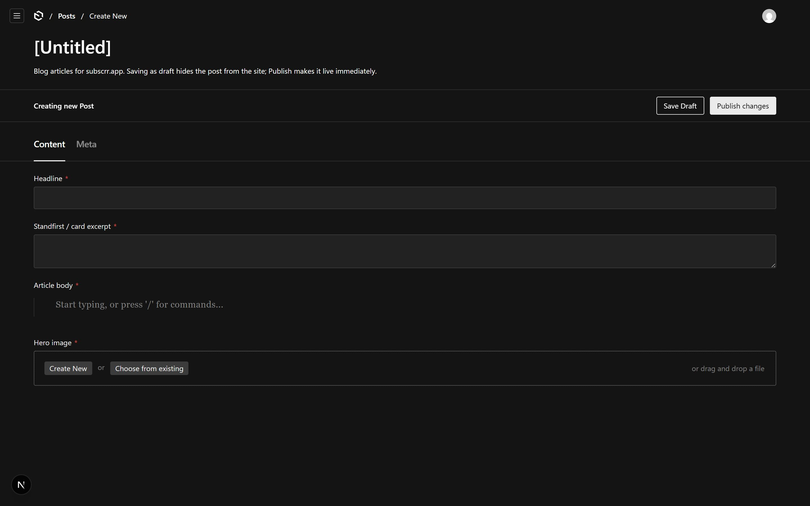
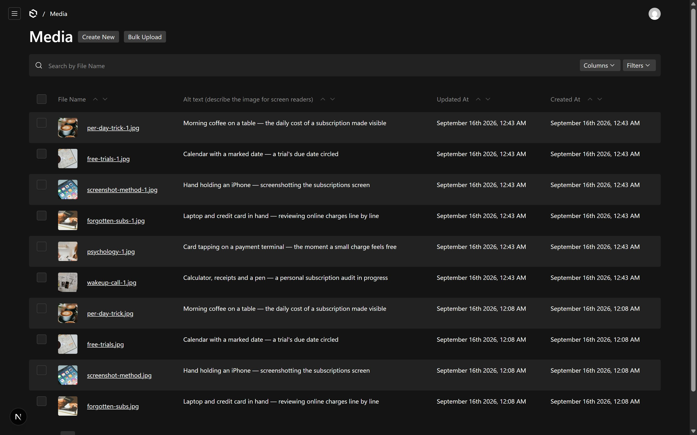
Posts (title, excerpt, rich body, hero image, slug, category, tags, publish date), Media (image assets), Blog Authors (CMS logins — deliberately separate from application accounts).
One deploy, one domain, one auth boundary for app + content; REST & GraphQL APIs namespaced under /api/payload so they never collide with the product API.
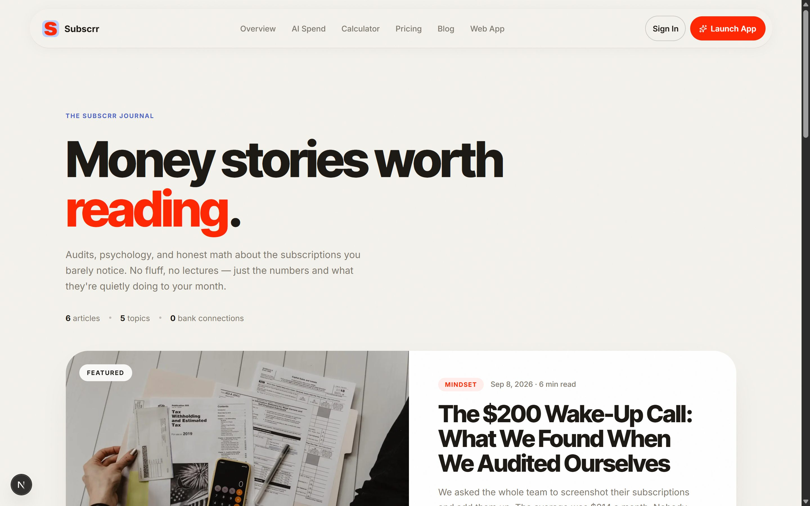
The subscription-tracking space splits into manual ledger apps and bank-aggregation tools. Subscrr takes a third path: manual + AI-assisted tracking with a privacy-first, multi-currency core.
| Subscrr | Bank-aggregation apps (Rocket Money, Copilot) | Manual ledger apps (Bobby, Notion trackers) | |
|---|---|---|---|
| Works without bank credentials | Yes — nothing to connect | No — requires read access to accounts | Yes |
| AI receipt / invoice extraction | Yes — vision model, real amounts | No (transaction matching only) | No |
| Proactive renewal & trial alerts by email | Yes — before the charge | Partial | Rarely / manual |
| True multi-currency with conversion | Yes — per-subscription | Limited to bank locale | Usually static |
| Built-in CMS blog for the brand | Yes — Payload, embedded | No | No |
| Self-hostable / data ownership | Yes — SQLite files, containerised | No — cloud only | Varies |
| Cross-platform web + iOS/watch positioning | Yes | Yes | Mobile-only often |
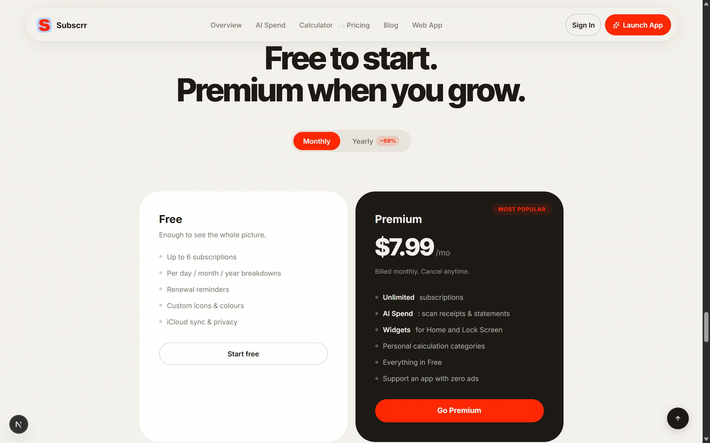
Next.js 16 (React 19) frontend · Express API with Helmet, CORS allow-listing and four scoped rate limiters · SQLite with integer-cent money math and versioned migrations · Payload 3 CMS · Nodemailer/Resend email · Docker + GitHub Actions CI.
JWT auth with pinned algorithm · per-account login lockout · hashed single-use reset tokens · authenticated private file serving · CSV formula-injection sanitisation · secrets fail-safe boot checks.
Users, subscriptions (cents-stored amounts, cycle normalisation), notifications, activity logs, waitlist leads — plus a separate content database for the CMS. Full CSV/JSON export keeps data portable.
Health endpoint with live DB verification · daily alert cron · structured activity logging · persistent volumes · one-command seed for demo environments.
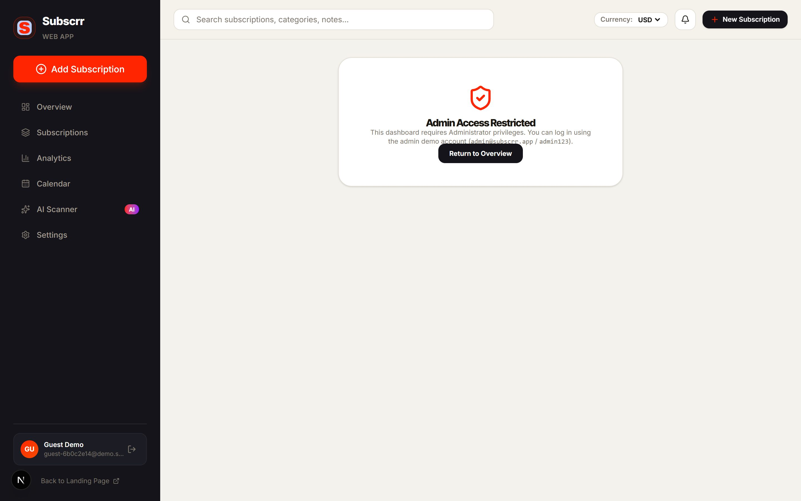
Know what you pay. Before you pay it.
Quick reference
App sign-in: /login · CMS admin: /admin · API health: /api/health
Data export: Subscriptions → Export CSV/JSON